Google's BotGuard Interstitial Challenge Breakdown
Bottom line: the interstitial is Google BotGuard, a JavaScript proof-of-work challenge. Reverse-engineered, it runs a broad environment scan and a heavy automation-tooling probe on top of a liveness / timing / proof-of-work gate. It is not the GPU/canvas rendering fingerprint you might expect - it profiles the browser environment and probes hard for automation artifacts.
What triggers the interstitial and what doesn't?
Google decides whether to show the challenge before any JavaScript runs, straight
from the request. To find what actually triggers it, I kept the IP the same (a clean
residential one) and changed one thing at a time - every request to /search?q=anything,
no cookies, checking whether the response is the challenge (it carries sg_ss / enablejs)
or the real results.
First I faked a real browser at the wire level - a proper Chrome TLS fingerprint that matches the User-Agent. Still got the challenge. Then I tried it with a plain NID cookie. Still the challenge. So neither a browser-like fingerprint nor a plain cookie is enough on its own.
python3 -c "from curl_cffi import requests as r;
b=r.get('https://www.google.com/search?q=anything',impersonate='chrome').text;
print('CHALLENGE' if 'sg_ss' in b or 'enablejs' in b else 'results')"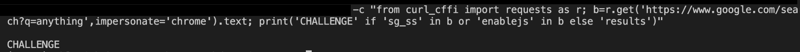
python3 -c "from curl_cffi import requests as r;
b=r.get('https://www.google.com/search?q=anything',impersonate='chrome',
headers={'Cookie':'NID=<paste-your-NID>'}).text;
print('CHALLENGE' if 'sg_ss' in b or 'enablejs' in b else 'results')"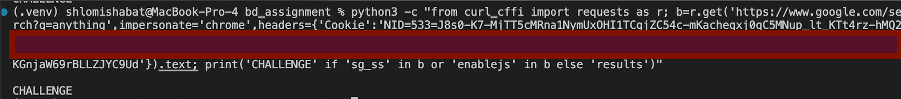
What actually clears it is a validated session - the NID you get after passing BotGuard, not just any NID. Until you have that, any request that looks like a browser but isn't trusted gets the interstitial. Three outcomes:
Trusted -> results, browser-like-but-untrusted -> interstitial, obvious bot -> reCAPTCHA.
How the challenge loads
Before any code, here's what actually happens when you hit the page with no cookies - the request, the challenge, and the token exchange.
First I took the response of google.com/anything from a clean profile (and no cookies)
to investigate where the interstitial challenge is being loaded. The first HTML response
is not the query response, we can see that a request after the “sei” param is being
added and only then we’re getting the query results HTML.
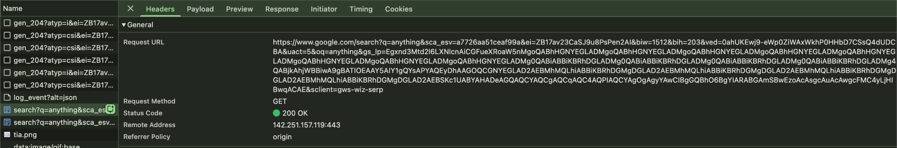
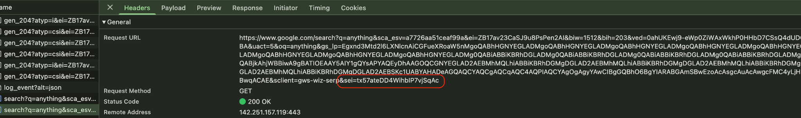
The first cookie-less request to /search returns the interstitial and sets only NID/AEC/__Secure-STRP - never SG_SS. First proof that SG_SS is written by the challenge on the client, not by the server.
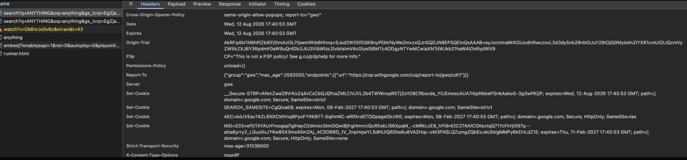
After the challenge runs, the follow-up /search?…&sei=… request carries SG_SS - a
base64url token prefixed with *. This is the VM's collected-and-encrypted output.
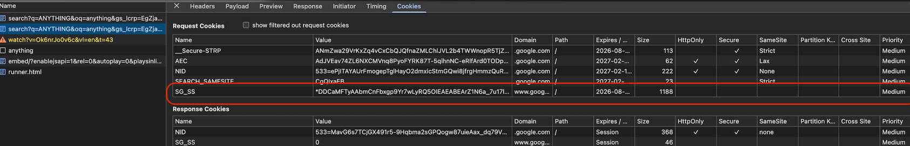
Google validates the token, deletes it (SG_SS=0, expiry 1990) and issues/refreshes the pass cookie NID. From here the browser is trusted and skips the interstitial.
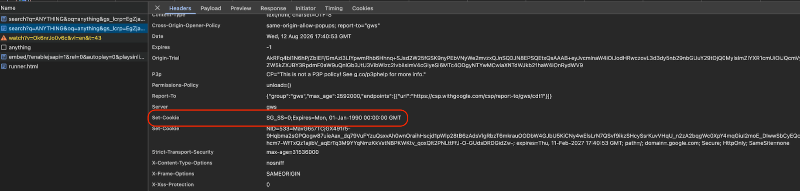
Inside the first HTML we can observe several interesting things. It actually carries two paths at once, and the client picks one by whether it runs JS or not.
<noscript> tag:
If JavaScript is disabled, a <style> hides the page and a
<meta http-equiv="refresh"> redirects to /httpservice/retry/enablejs?sei=....
This is the no-JS branch of the fork: a browser with JS ignores it; a client with no JS
engine is bounced to the enablejs gate. It is inert whenever scripting is on.
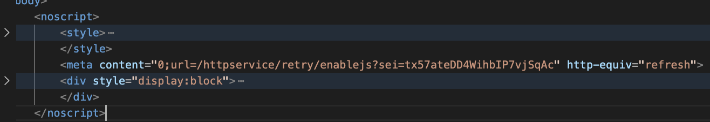
Getting to the VM
Now into the JavaScript that runs the challenge - how the VM is delivered, and confirming it's the same engine inline and from /js/bg.
<script> 2 tag:
Script 2 does two things:
- Creates a script - the page's CSP blocks plain eval, so it wraps the VM source
with the policy's
createScript(...)into a Trusted Script the CSP will accept. - Run it - It hands that script to indirect eval - which executes it in the global scope. That single line is the whole activation: build a trusted script, then eval it.
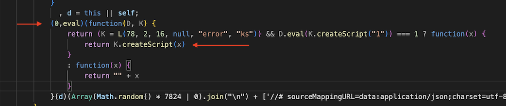
The argument to eval is the VM itself, assembled at runtime: a random block of blank
lines (Math.random()*7824 - per-load padding), a decoy source map, and one string that
is the whole program. Joining that string back and running it through js-beautify gives
the readable VM source.
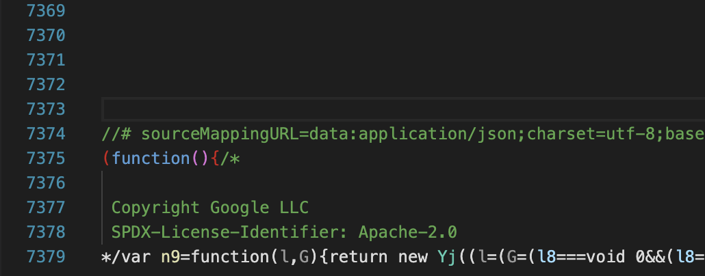
From here i’ve found the path js/bg in the code:
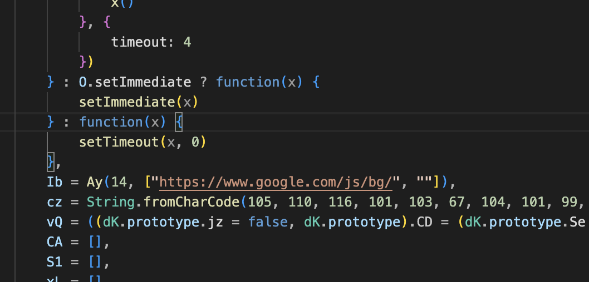
So i’ve tried to find a request that is being loaded since clearly the URL is built dynamically by the code.
Then I've found a request whose structure looks exactly like our interpreter.
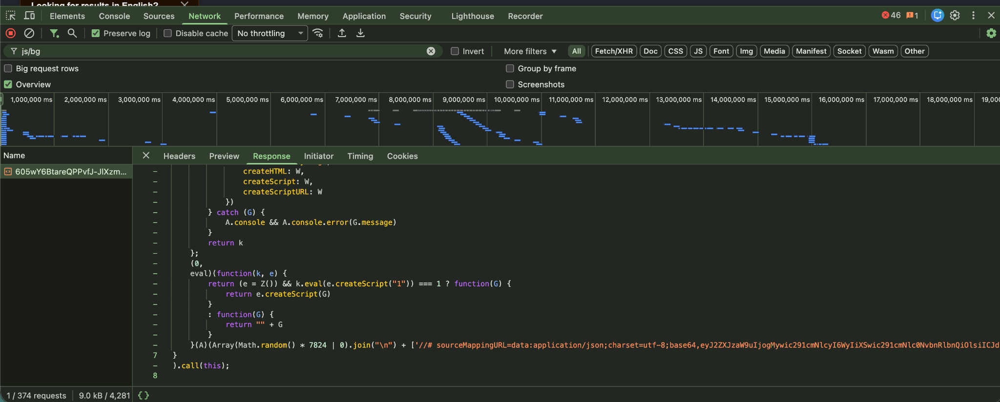
So again I took the code, and compared it to the one we got inline. This time i’ve used the debugger to extract the script being injected into the eval:
First obstacle - the decoy blanks DevTools. One toggle fixes it: uncheck "Enable JavaScript source maps".
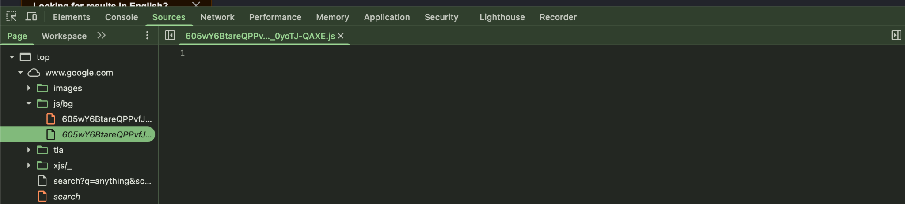
Copy the value of Y:
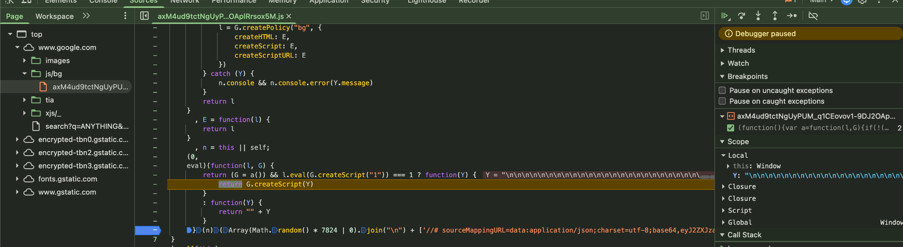
So the two are the same script - same functionality, just different obfuscation layers.
Obfuscation can rename and reshuffle everything, but it can't change the values the code actually needs to run - the URL it calls, the hidden strings, the sentinel tokens. Those come out identical in both files, and that's what I matched:
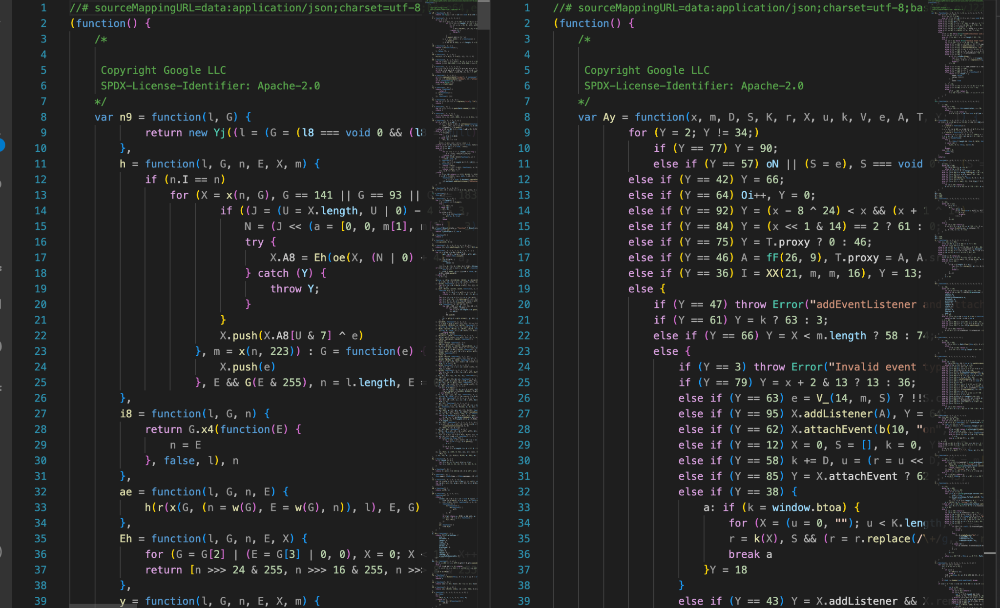
Same endpoint literal, same template-tag call, and the same 16 character codes decoding to the same hidden token integCheckBypass. The only differences are the renamed helper (Ej / Ay) and a numeric argument. A different program would not independently invent this exact URL and this exact char-code-encoded string.
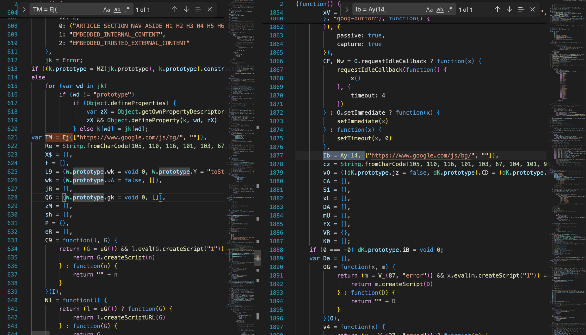
Identical internal sentinel:
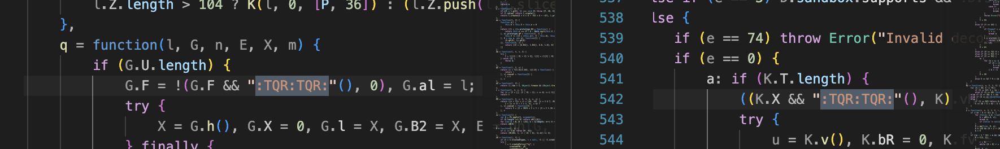
Identical Trusted-Types enums and tag whitelist:
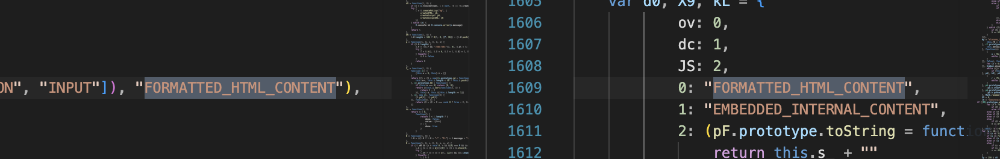
Static - why the checks can't be read from the code
With the VM in hand, the obvious move is to read the checks straight out of it. It doesn't work, and here's exactly why.
Now i started to look for any fingerprint marks in the scripts so i’ve run the following:
printf 'property-name string literals found in bg.pretty.js: '; grep -oE "[\"'](webdriver|userAgent|appVersion|platform|vendor|language|languages|plugins|mimeTypes|hardwareConcurrency|deviceMemory|maxTouchPoints|connection|userAgentData|chrome|toDataURL|getImageData|getParameter|getExtension|performance|hidden|visibilityState|getTimezoneOffset|screen|width|height|colorDepth|devicePixelRatio|localStorage|indexedDB|cookie)[\"']" new_namual/script/js/bg.pretty.js | wc -l | tr -d ' 'Results:
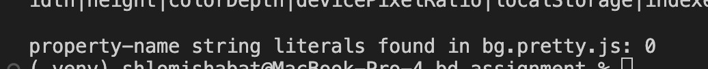
It didn’t yield anything. Therefore I continued to the next step which is to search where
and how the code engine builds the string for collecting fingerprints on run time.
I located the construction routine, then traced its inputs backwards to establish where
the data actually comes from. These are two instructions of the VM's bytecode
interpreter, registered with d(<opcode>, <handler>).
Both build a string one character at a time by XOR-ing a byte array with the constant 121, then use that string as a property key:
Opcode 92 (208-210): z += String.fromCharCode(Z[u] ^ 121), then z in Q - tests whether
a property named z exists on object Q.
Opcode 40 (211-213): the same decode into Q, then Z[Q] - reads the property named Q from object Z.
The key (121) is a fixed constant, but the two inputs (the object and the byte array) are
not literals here. They are obtained through x(Y, …) and w(Y), so to know which
property is touched we must know what those calls return.
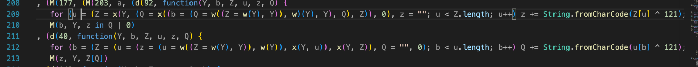
Lines 440-445: the operand's value is read from a register. x(l, G) returns l.g[G], the
value held in register G. This is how every opcode obtains its operand values.
The consequence is that the byte array feeding the decoder above is a register value, i.e. runtime state, not something present in the source.
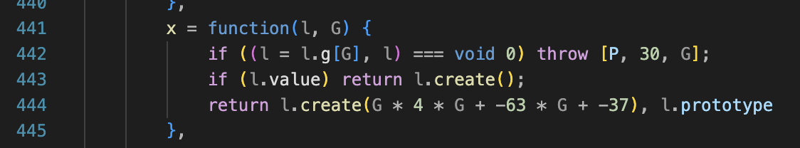
Lines 66-70: decrypting the bytecode. "w" reads the next unit from the bytecode stream. It takes the read cursor from register 203, computes the current 8-byte block, and whenever it enters a new block it regenerates the keystream by running the cipher (Eh) on that block, keyed by register 4 - the per-load key.
It then returns byte ^ l.mU[…]. Every operand the interpreter consumes including the
byte arrays that become property names, is therefore a decrypted value, produced at
runtime with a per-load key.
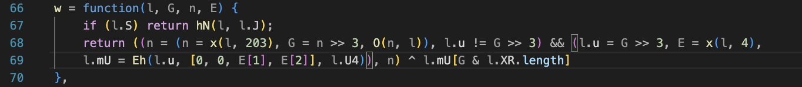
Lines 35-39: the block cipher that produces the keystream Eh is the primitive “w” calls to decrypt.
It is an ARX block cipher (add / rotate / XOR): 15 rounds of 8- and 3-bit rotations, additions, and XORs against a round constant derived from the key plus 3766, returning 8 output bytes. Its key material comes from the bytecode header (registers seeded per load), so the same ciphertext decrypts differently on every response.
This is why the encrypted program (p = 'srgC8z…' in the page) is unreadable without running the cipher with that load's key.
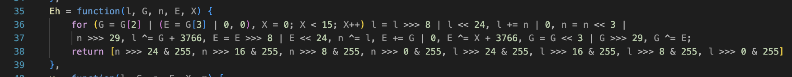
The bytecode is the other place a signal list could hide, so I tried to decrypt it. The mechanism is clear: the first four bytes of the program are the cipher seed (U4), the key sits in a register that starts at [0,0,0], and every byte is ciphertext XOR Eh(block, key, U4). I re-implemented that in Python (analysis/decrypt_bytecode.py) .
It doesn't decrypt cleanly - and that's the point. The key is self-bootstrapping: it starts empty and the bytecode writes the real one. And the cipher is diversified per build - the round constant is 3766 in the served bg.js but 2111 in this inline copy, and the key even sits in a different register. So decrypting a program means re-implementing that exact build's VM.
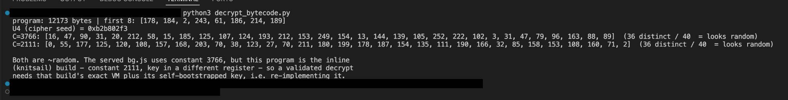
The last place a name could hide is a static encoded array in the interpreter itself. So I took every numeric-array literal in the source and ran the decoder's own operation on it - XOR each byte with 121. If a name were stored that way, it'd show up:
import re
src = open("bg.pretty.js").read()
arrays = re.findall(r'\[\s*\d{1,3}(?:\s*,\s*\d{1,3}){2,}\s*\]', src)
for a in arrays:
nums = [int(x) for x in re.findall(r'\d+', a)]
print(a, "->", "".join(chr(n ^ 121) for n in nums))no name is recoverable from the source. The entire file contains only 4 numeric-array literals, and none decode to a property name: they are [0, 0, 0] (register initialisation) and [0, 0, 1, 1, 0, 1, 1] (a flags vector).
As a control, applying the plain character-code decode (no XOR) to the static
String.fromCharCode(105, 110, …) literal correctly yields “integCheckBypass”, so the
method works. Plain static strings are recovered; the decoder's inputs are simply not in
the source.
numeric-array literals in the whole file : 4
of those, XOR-121 -> a readable name : 0
[0, 0, 0] -> 'yyy' (register init, not a name)
[0, 0, 1, 1, 0, 1, 1] -> 'yyxxyxx' (flags, not a name)
cross-check (validates the tool):
fromCharCode(105,110,...) with NO xor -> 'integCheckBypass' ← plain strings DO decodeConclusion: Three independent lines of evidence converge: the operand values are read from registers, the registers are filled by decrypting per-load bytecode with a per-load key, and a full census of the file's literals recovers no names.
The interpreter itself is fully visible statically, but the properties it reads are materialised only during execution.
The list of collected signals therefore cannot be enumerated by reading the code - it has to be observed while the engine runs, which is the dynamic phase.
Dynamic - watching it run
If you can't read the checks, you run the thing and watch. First I tried the debugger, then built a proper monitor.
So I went to find the decoder in the live VM:
A global search for fromCharCode across every loaded script finds the XOR-121 decoder inside the BotGuard script served from /js/bg/ that we saw earlier.
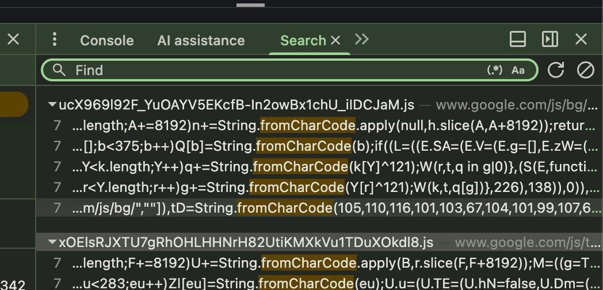
In the console, I set a breakpoint on the script and dived into the VM:
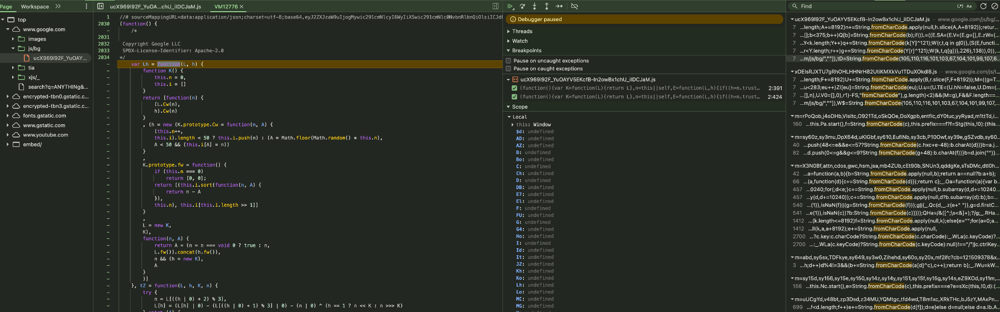
On each decode site I added a no-pause conditional breakpoint:
(top.__bg = top.__bg || new Set()).add(name), false - placed right after the decode
loop, where the name is complete. The trailing , false means it never stops execution; it
only accumulates every decoded property name into a Set we can read back.
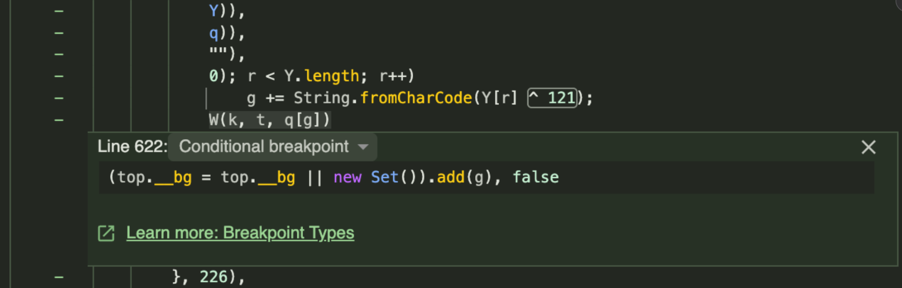
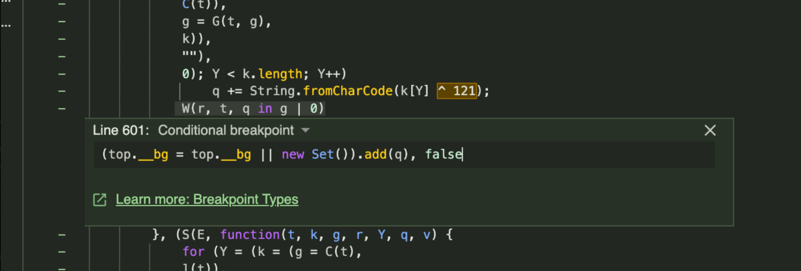
Reading it back, [...top.__bg].sort() returns a single value: '\x96{0}', binary, not even
a property name. The breakpoint fired once before the run settled, then nothing more.
After a reload it returned not iterable: the Set was never created, because the
breakpoints were already gone.
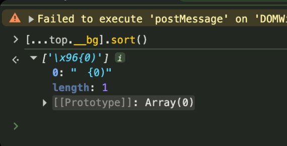
This is where it hits a wall and can't cross by hand:
The interpreter is eval'd, so every load produces a script with a fresh identity. Two consequences follow. First, breakpoints set on one run do not re-arm on the next one; a reload wipes them.
The names only exist while the engine runs, so there's no way to read them out of the code, and no clean way to freeze them by hand. The right way to see them is to watch a real browser run the challenge, without ever touching the VM.
At this point I've decided to build an extension that will hook all the fingerprinting being collected by the script. This idea grew out of a tool I already had. I built and maintained - fpMonD, a fingerprint-monitoring Chrome extension.
When I pointed my extension at BotGuard, it surfaced nothing - and that failure was the
design brief: fpMonD hooks the instance (Object.defineProperty(navigator, …)) and
cannot follow BotGuard into fresh realms.
So I built a purpose-built, prototype-level, cross-realm monitor, cross-referencing fpMonD's own signal list and DuckDuckGo's fingerprinting surface (content-scope-scripts + their API-call collector tracker-radar-collector).
Extension folder: /fp-monitor-ext attached to the report.
Why it is built the way it is:
- Fidelity first - BotGuard detects observers, so I run in a real, un-automated browser (an MV3 extension), not headless automation.
- Earliest injection, every frame - a content script at
run_at:document_startin the page'sworld:MAIN, so the wrappers are installed before the VM reads anything, in every frame. - Coverage by construction - not a fixed list: a catch-all wraps every accessor on Navigator/Screen/Window/Document.prototype, plus the full method surface (canvas + OffscreenCanvas, WebGL, audio, fonts, layout, storage, WebRTC + ICE, Client-Hints, media), DOM growth, new globals, realm constructors, and behavioural event listeners.
- Attribution - every read carries a stack; the hook is tagged
//# sourceURL=__fp_hook__.jsso its own frames drop out, leaving the real caller (immediate) and initiator (root). /js/bg/ anywhere in the stack = certain BotGuard; eval/anon = BotGuard's VM mixed with other eval'd code. - Low-observability - wrapped functions answer Function.prototype.toString with the exact native string, so BotGuard's toString anti-hook probe does not see them. A descriptor check could still spot a non-native getter, but I didn't run into that here.
- Signal isolation - the results page is noisy: YouTube embeds and ad/analytics tags fingerprint too, in the same eval/anon bucket. Rather than block them and assume whatever's left is BotGuard, I capture on the interstitial itself, where BotGuard is the only thing running - so every read is unambiguously its.
I ran the monitor on a clean profile (no cookies) and read back everything BotGuard
touched. Before trusting the absences, I checked coverage: the hooks are in place
before anything runs, in every frame - including the blank <iframe> BotGuard spins up
for clean natives, which turned out to be just an eval sandbox with nothing fingerprinted
inside. No Web Worker either. One caveat turned out to matter more than I first thought:
the accessor catch-all can only see properties that exist. The automation probes
BotGuard runs - window.domAutomationController, document.$cdc_..., window.callPhantom - are
undefined on a clean browser, so there is no getter to hook; the catch-all is blind to
them by construction. Once I added logging getters that register even an undefined read,
the whole probe battery appeared. (This is why my first pass reported them as "not read"
- they were never observable, not absent.)
Here's the full set - broader than my first pass caught:
| Liveness / proof-of-work | performance.now · document.hidden / readyState · Function.toString (anti-hook) |
| Behaviour | mousedown / mouseup · touchstart / touchend |
| Environment | screen.* · devicePixelRatio · inner / outer size · hardwareConcurrency · deviceMemory · maxTouchPoints · platform · connection · plugins / mimeTypes · languages · history.length · chrome |
| Locale / clock | getTimezoneOffset · wall clock (h / m) · timezone |
| Automation probes sampled per load | webdriver · $cdc_ (ChromeDriver) · domAutomationController · callPhantom · cefsharp_CreatePromise · __nightmare · Cypress · awesomium · windmill · ubot · boundObject · PerfTestReturnValue |
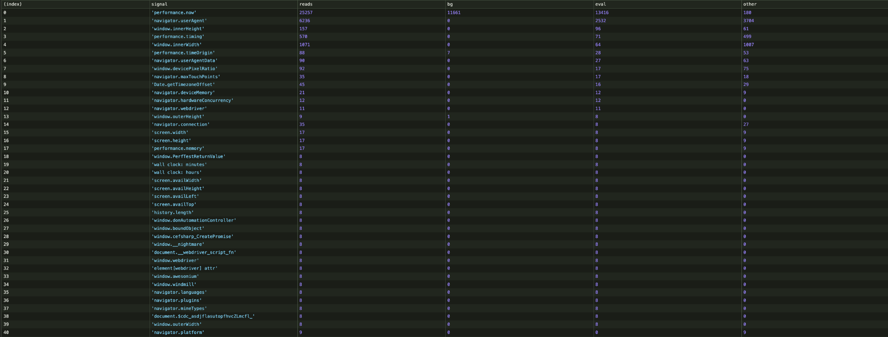
The live capture - each signal with its read count and attribution: bg = /js/bg in the stack, eval = its VM.
Not read (this VM): canvas · WebGL / GPU renderer · fonts · AudioContext; the rendering fingerprint, which lives in reCAPTCHA on escalation, not in the interstitial.
So what does it read, and why? The signals split into two jobs. The liveness / timing / behaviour set answers "is a real human, on a real browser, present right now?" The environment and automation set answers "is this a genuine, un-instrumented browser, or an automation rig?"
Timing - performance.now (the proof-of-work clock). The VM runs a compute puzzle and times it against the high-resolution clock. This both proves the work was really done on the client and exposes artificial slowdown - a debugger, single-stepping, or heavy instrumentation stretches the timing. Polled continuously (~1,675 reads per run).
Liveness - document.hidden / document.readyState. Polled constantly (~1,637 reads). A real user's tab is visible and focused; headless runs and background automation read as hidden. Cheap to sample, hard to fake convincingly over time.
Behaviour - mousedown / mouseup / touchstart / touchend. It subscribes to the raw input events. A synthetic element.click() has no matching physical press-and-release or tap, a genuine gesture does. This is evidence of a human.
Environment - screen geometry, devicePixelRatio, window sizing, hardwareConcurrency / deviceMemory, maxTouchPoints, platform, plugins / mimeTypes, languages, connection. The device and OS profile. Each value is weak alone, but together they have to stay internally consistent and consistent with the User-Agent and the network layer - a spoofed or headless environment tends to contradict itself here.
Automation probes - a rotating set of tooling tells: WebDriver flags (navigator / window / documentElement), ChromeDriver's $cdc_ global, and headless-framework globals (callPhantom, __nightmare, Cypress, ubot, windmill, awesomium). All of these are undefined on a genuine browser; the moment one is present, the client is an automation rig. It samples a different subset each load, which is why a single capture only sees part of the set.
Anti-tamper - Function.prototype.toString. It reads the source of native functions to check for the [native code] signature. A wrapped or patched native - an instrumentation hook, a spoofed getter shows up right here. This is BotGuard protecting the integrity of its own measurements.
Clean realm - the blank <iframe>. It inserts a blank same-origin iframe and runs VM
code through its pristine eval, so its logic executes on native functions that page-level
hooks cannot have touched. I confirmed the purpose: the access was attributed to the
VM's own W.eval, and nothing was fingerprinted inside.
So the picture is a comprehensive gate: a liveness / timing / proof-of-work core, wrapped in an environment profile and a broad automation-artifact scan. What it deliberately skips is the GPU/canvas rendering fingerprint - that heavier device-identity work is handled by reCAPTCHA on escalation, not here. I ran this across several fresh interstitials, each a different per-load program, plus a trusted background session: the core set is stable, and the automation probes are sampled - a rotating subset each load so it takes a few captures to see the whole battery. This is an observed, attributed lower bound: reads inside a worker or an unreachable realm would not show.
Closing the loop
So the last piece is what happens to everything the VM collected. From the network I could already see that SG_SS is never set by the server, which means the page writes it itself. To catch that write and confirm it's coming from the VM, I overrode document.cookie and logged every SG_SS write together with its stack:
const d = Object.getOwnPropertyDescriptor(Document.prototype, 'cookie');
Object.defineProperty(Document.prototype, 'cookie', {
configurable: true,
get() { return d.get.call(this); },
set(v) {
if (/SG_SS/i.test(v)) { console.log('[SG_SS written]', v); console.trace(); }
return d.set.call(this, v);
},
});
It fired once, and that's all I needed. The value being written is the SG_SS token, and
the stack shows exactly where it's born: it's built inside the eval'd VM (VM11855),
handed back to the page, and the page writes it as the cookie. A moment later the tab
navigates to /search?...&sei=... to send it. So SG_SS isn't anything extra, it's just the
VM's output turned into a cookie.

The token itself isn't a black box either. I decoded a few of them - base64url after the * marker - and lined them up byte-for-byte. There's a clear structure: a fixed header, two little-endian length fields, and a marker that are identical in every token (the envelope), wrapped around a large body that changes completely each time. That body is high-entropy, so it's encrypted - not a plaintext score.
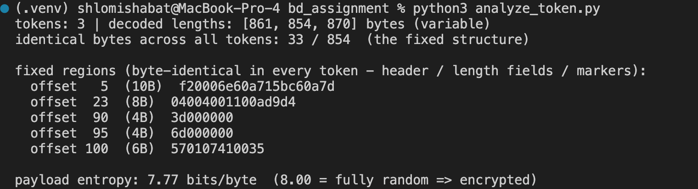
So SG_SS is a framed, encrypted payload - the collected signals, sealed with a key that lives on Google's server, not in the browser. That's why we can't read it, and why you can't forge or replay one: only the server can open the envelope, check the signals and the session binding (the sei), and if it's a real browser, hand back the NID. It's single-use - tied to that one sei, and the server deletes it (SG_SS=0) the moment it's spent.
And that's the whole loop:
signals -> VM builds the token -> page writes it as SG_SS -> sent with &sei= -> google returns NID -> browser trusted, no more interstitial.
What this means in practice.
Because the challenge is a liveness + timing + behaviour check, not a device scan, getting through it is about being a real browser, not looking like one. A real Chrome with a visible, focused tab, genuine timing, and untouched native functions passes; spoofing canvas, the user-agent, or the GPU string does nothing here - BotGuard never reads them. That kind of device fingerprinting matters elsewhere - at the network layer, or if you fail and get bumped to reCAPTCHA.
The full toolset - the deobfuscation and analysis scripts, the cross-realm monitor extension, and the captured sessions - is on GitHub, with the original report attached.
Code on GitHub